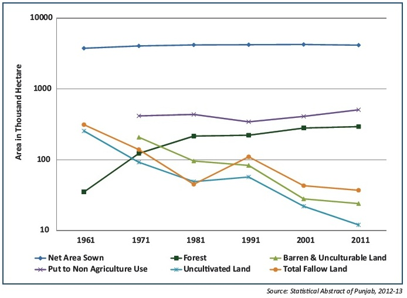

ABOUT THIS PROJECT
INTRODUCTION :-
Punjab is one of the smaller states of India with an area of 50,362 sq. km located in the northwestern part of the country.
The state comprises of 22 districts. Approximately 84% of its area is under agriculture. However, though Punjab has only
3.52% area under forests (ISFR, 2013) yet it supports a diversity of 1897 Angiosperms, 48 Pteridophytes, 34 Bryophytes,
948 Fungi and 397 Algae reported in the wild. Amongst faunal diversity, the state is especially rich in population of birds
(428 species) and fishes (131 species).The domesticated agricultural faunal diversity includes three breeds each of cows,
buffaloes and sheep and two breeds each of goats and poultry.Out of these Murrah & Nili Ravi breeds of buffaloes,
Hariana & Sahiwal breeds of cattle, Lohi, Nali, & Desi breeds of sheep and Beetal breed of goat are indigenous.
Ecosystems Services and Biodiversity in Punjab

Data a indicates that out of the total 373 large/medium units (LMU) in Punjab, 310 units (83%) utilize bio-resources as major raw
material. These include 142 units of food products & beverages (45%), 96 textile units of both, natural and synthetic fibre (31%)
and 33 paper & paper products units (11%). The maximum bioresource based LMUs are located in district Ludhiana (77) followed by
Patiala (59), and Mohali & Amritsar (32 each). Data also indicates that 13% (20,940) of the total Small Scale Units (SSU) are
bioresource-based enterprises. These include food products & beverages (6081), leather & leather products (4263), textiles (1425
approx.), wood products (2783), furniture (2621), paper & paper products (754), rubber products (647), hosiery & garments 394,
pharmaceuticals & botanicals (212) and tobacco products (7). Ludhiana (4292), Amritsar (2816), Sangrur (2803) and Jalandhar (1926)
are leading districts for bioresources based SSUs in the state.

The estimated total number of species on Earth is about 8.7 million. This figure is based on a new analytical technique.
The breakdown of species across a range of taxonomic groups is:
• 1.05 million insects
• Over 11,000 birds
• Over 11,000 reptiles
• Over 6,000 mammals
Scientists predict that only 15% of species are known to man. That leaves almost 85% species yet to be discovered.